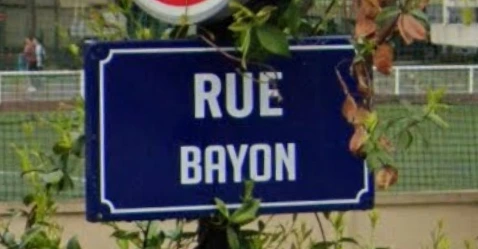
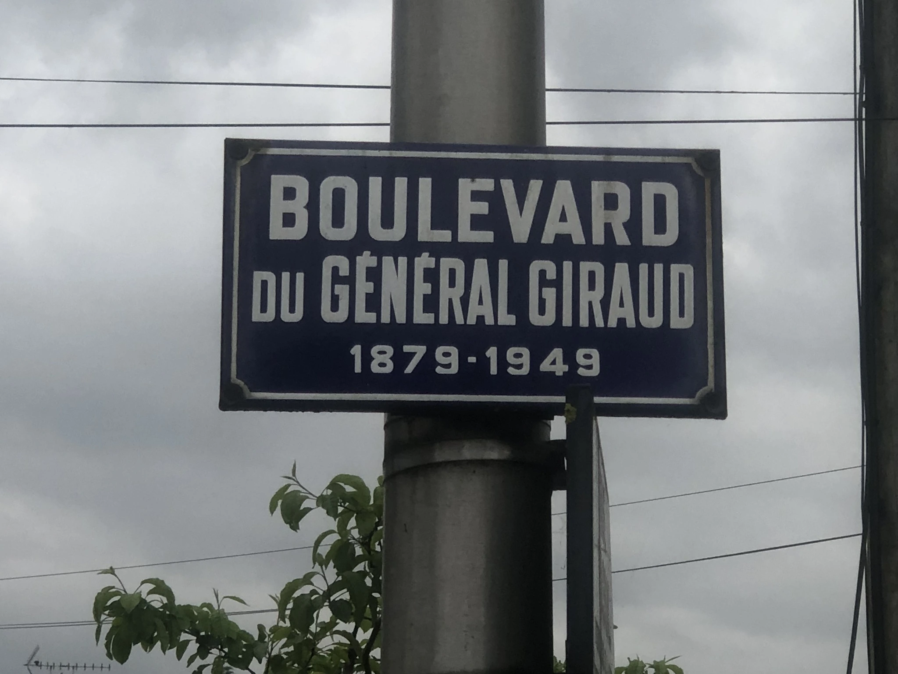
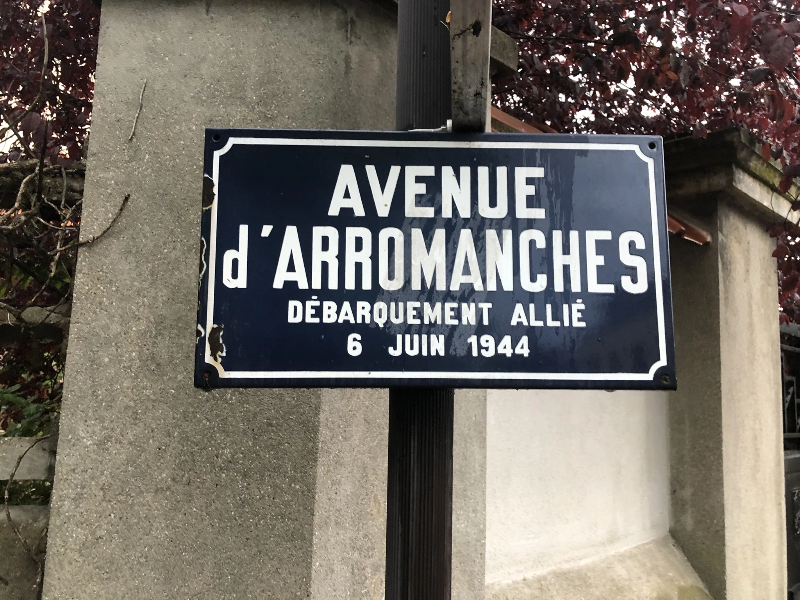

Retour à la carte
Le quartier de La Pie
La rue Bayon

Découvrez l'histoire de la rue Bayon
Le Boulevard du Général Giraud

Découvrez l'histoire du Boulevard du Général Giraud
Le Square et l'Avenue d'Arromanches

Découvrez l'histoire du Square et de l'Avenue d'Arromanches